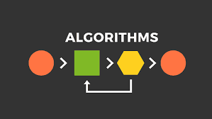

Chapter 5: Programming Algorithms and Software Testing
Phases of Computer Development:
- Phase 1: Understand the problem
- Phase 2: Design and algorithm to solve the problem
- Phase 3: Write the program code in an appropriate language based on the algorithm
- Phase 4: Enter the program and save
- Phase 5: Execute the program
- Phase 6: Test the program, find errors and debug, then retest
- Phase 7: Document and evaluate the program
Programming Structures:
- Sequential structure: Top-down execution
- Decision structures: if/then/else
- Iterative (Looping):
- While loop: continue looping as long as something is true
- Repeat/ until loop: continue looping until something is true
- For loop: loop a given number of times
- Recursive structures:
- Repeat a set of instructions as a subtask of itself
- Repitition continues until:
- degenerative case, which is a termination contition, is met
- (degenerative case is also called a "base case")
Two classic programming/ database problems:
- Sorting: Descending order/ Ascending order
- Sorting numbers
- Sorting strings (in accordance with ASCII values)
- Searching: find specific data that meet a certain criteria
- In database:
- Filters: temporary search
- Queries: search criteria are saved so they so they don't have to be recreated
- Two popular search techniques:
- Sequential search: search from top to bottom or bottom to top, one item at a time
- Binary Search:
- only works if data is SORTED first
- start in the middle, then go to half of that, etc.
Two classic program goals:
- Efficiency: Program takes minimal time/ resources
- Correctness: Program runs in expected ways and works for all expected conditions
Software testing and verification
- Kinds of tests:
- Acceptance testing: Verifying whether the whole system works as intended.
- Integration testing: Ensuring that software components or functions operate together.
- Unit testing: Validating that each software unit runs as expected. A unit is the smallest testable component of an application.
- Functional testing: Checking functions by emulating business scenarios, based on functional requirements. Black-box testing is a common way to verify functions.
- Performance testing: Testing how the software runs under different workloads. Load testing, for example, is used to evaluate performance under real-life load conditions.
- Regression testing: Checking whether new features break or degrade functionality. Sanity testing can be used to verify menus, functions and commands at the surface level, when there is no time for a full regression test.
- Usability testing: Validating how well a customer can use a system or web application to complete a task.
- Software testing is done to prevent:
- Architectural flaws
- Poor design decisions
- Invalid or incirrect functionality
- Security vulnerabilities
- Scalability issues
- Testing best practices:
- Continous testing: Project teams test each build as it becomes available. This type of software testing relies on test automation that is integrated with the deployment process. It enables software to be validated in realistic test environments earlier in the process, which improves design and reduces risks.
- Configuration management: Organizations centrally maintain test assets and track what software builds to test. Teams gain access to assets such as code, requirements, design documents, models, test scripts and test results. Good systems include user authentication and audit trails to help teams meet compliance requirements with minimal administrative effort.
- Servic virtualization: Testing environments might not be available, especially early in code development. Service virtualization simulates the services and systems that are missing or not yet completed, enabling teams to reduce dependencies and test sooner. They can reuse, deploy and change a configuration to test different scenarios without having to modify the original environment.
- Defect or "bug tracking": Monitoring defects is important to both testing and development teams for measuring and improving quality. Automated tools allow teams to track defects, measure their scope and impact, and uncover related issues.
- Metrics and reporting: Reporting and analytics enable team members to share status, goals and test results. Advanced tools integrate project metrics and present results in a dashboard. Teams quickly see the overall health of a project and can monitor relationships between test, development and other project elements.

- From: IBM What is software testing?
|
|